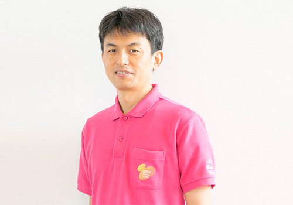
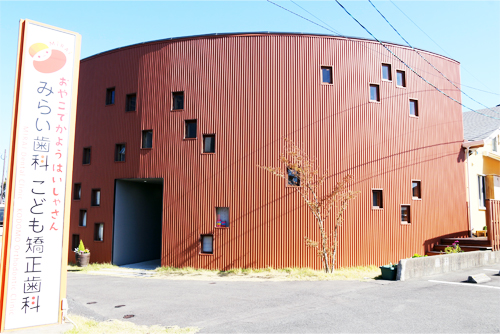
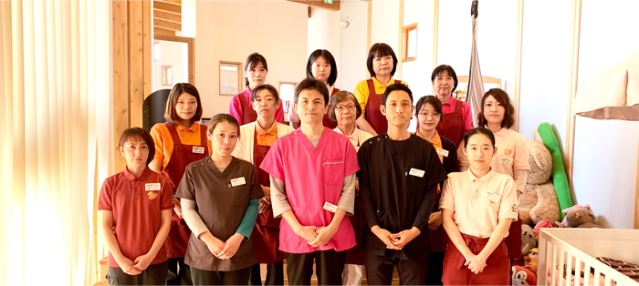

みらい歯科・こども矯正歯科についてAccess
佐賀県鳥栖市の「みらい歯科・こども矯正歯科」は、こどもが楽しく通える歯医者を目指す、ご家族で通っていただける歯科医院です。とくにこどもの矯正治療に力を入れています。
こちらでは、当院院長からのごあいさつや診療時間、アクセスなど、当院についての情報をご紹介します。おとなもこどもも、お口について気になることがあればお気軽に当院までご相談ください。
院長ごあいさつ

「みらい歯科・こども矯正歯科」のホームページにお越しいただき、ありがとうございます。当院は“おやこで通う歯医者さん”です。お子さまの大切な歯を守り、健やかな成長を支えるために、むし歯予防と小児予防矯正に力を入れております。
笑顔あふれる生活には、何をおいても全身が健康であることが重要です。そして全身の健康を保つためには、まずお口の健康（健口）が大切です。お口が健康であってこそしっかりとした食事をとることができ、全身の健康につながります。お口はまさに“命の入り口”なのです。
しかし残念ながら、むし歯や歯周病、噛み合わせの問題などを抱えている方は少なくありません。治療によって改善したり、失った歯を人工の歯で補ったりすることはできますが、どんなに優れた素材でも使える年数にはかぎりがあります。また、おとなになってから矯正をする場合、たいてい抜歯も必要になってしまいます。
私は歯科医師として、今まで幅広い年齢層の方の治療にあたってきました。そのたびに感じてきたのが、天然歯の素晴らしさに勝るものはない、ということです。永久歯が生えるのは、一生に一回です。そこでむし歯や歯周病を予防し、大切な歯を守るために力を注いでいきたいと考えるようになりました。
当院は小児歯科を中心に歯科医療をご提供することで、地域の皆さまの健康を支えていきたいと考えております。“地域の皆さまの健康的かつ笑顔あふれる生活のお手伝い”を社是として、新しい知識や技術の習得に日々邁進することを怠りません。
また当院には、屋内のこどもの遊び場“みらいキッズランド”を併設しております。親子ともども快適に過ごせる環境を整えておりますので、まずはみらいキッズランドに遊びに来てください。
院長 中村 好一
院長プロフィール
| 略歴 | 鹿児島大学歯学部卒業 倉敷医療生協歯科診療所勤務 関東・九州の医療法人勤務を経て 2009年 弥生が丘みらい歯科クリニック開院 2015年 みらい歯科・こども矯正歯科（医療法人敬天会）設立 |
|---|---|
| 所属学会 |
|
| 所属勉強会 |
|
診療時間
※表は左右にスクロールして確認することができます。
| 月 | 火 | 水 | 木 | 金 | 土 | 日・祝 | |
|---|---|---|---|---|---|---|---|
| 9:00～17：30 | ○ | ○ | ○ | ○ | ○ | ○ | - |
※昼休みはありません。終日受診可能です。
※休診日：日曜・祝日
当院へのアクセス
| 医院名 | みらい歯科・こども矯正歯科 |  |
|---|---|---|
| 所在地 | 〒841-0005 佐賀県鳥栖市弥生が丘2丁目194番地 |
|
| アクセス | JR弥生が丘駅より徒歩15分 | |
| 駐車場 | 17台分完備 | |
| 電話 | 0120-489-301 |
はじめてご来院される方へのメッセージ

当院は、お子さまの大切な歯を守り健やかな成長を支えるために、むし歯と小児矯正にとくに力を入れております。当院が目指しているのは、「むし歯のできないお口の環境をつくって、むし歯のないきれいな歯並びの永久歯をつくること」です。
そのために、お子さまに楽しく来院してもらえるようさまざまな工夫をしています。永久歯が生えるのは、一生に一回です。その時期までに予防を習慣にしておくことが、とても大切です。3歳までに小児歯科を受診したお子さまは、将来もむし歯が少なくなることがわかっています。まずは、3歳になる前に一緒にご来院ください。